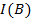

International Journal on Computer Vision, Machine Learning, and Data Mining (CVMLDM)

Volume 1 - Year 2015 - Pages 29-38
DOI: TBD
Rearrangement of Attributes in Information Table and its Application for Missing Data Imputation
Gongzhu Hu1, Feng Gao2
1Department of Computer Science, Central Michigan University
Mount Pleasant, Michigan, USA
hu1g@cmich.edu
2Science School, Qingdao Technological University
Qingdao, China
gaofeng99@sina.com
Abstract - In rough set theory, data is usually stored in an information table with attributes divided into condition attributes and decision attribute. Due to the uncertainty in the data, the data set is represented by formal approximations and “condition-decision” rules can be deducted from the approximations based on the assumption that some sort of causal relations exist between different attributes. In this paper, we propose an attribute rearrangement approach to extract logical relations (maybe considered as causal relations) between different attributes in information tables. We introduce the notion of optimal logic attribute and optimal attribute logical flow based on the roughness of the rearrangements to explore the logical relations between attributes. This rearrangement approach can be used to address the missing data problem for most data analysis tasks. We apply the attribute rearrangement approach to the missing value imputation problem by rearranging the attributes such that the attribute with missing values becomes the decision attribute so that we can decide how to deal with the missing value based on the logical relations extracted from the rearrangement. In the case that the rearrangement is an optimal attribute logical flow, we impute the missing data by the deducted decision rules, otherwise the missing data is imputed by other method. We illustrated this approach with a few simple examples.
Keywords: Rough set, rearrangement of attributes, roughness of rearrangement, optimal attribute logical flow, missing data imputation.
© Copyright 2015 Authors - This is an Open Access article published under the Creative Commons Attribution License terms. Unrestricted use, distribution, and reproduction in any medium are permitted, provided the original work is properly cited.
Date Received: 2014-09-07
Date Accepted: 2015-06-11
Date Published: 2015-09-30
1. Introduction
In rough set theory [21, 23, 24], the information of a real world application is normally expressed as an information table that represents the data for the application. A simple example is given in Table 1 that shows the possible results of a physician’s diagnosis of six patients.
In this table, e1;e2;e3;e4;e5;e6 are called cases (also called objects, records, or observations). The cases are associated with attributes that may draw values from different domains. The attributes of an information table are divided into two categories: condition attributes and decision attributes. An attribute in an information table is identified as decision attribute simply because it has a special importance or it is the one we want to focus our attention on. For example, flu is identified as the decision attribute in Table 1 because the physician is concerned about if the patients have flu or not. However, the same information table may be looked at from different points of view when we want to focus on different attributes. Taking Table 1 as an example, the physician may be concerned about the patients’ temperature and want to find out those patients with flu having high temperature or normal temperature. In this case, temperature rather than flu should be the decision attribute. Similarly, headache or muscle_pain may be the decision attribute if the doctor is concerned about these attributes of the patients. This thought leads to a need of rearrangement of the attributes with each rearrangement having a different attribute as the decision attribute.
Table 1. An information table.
| Case | Condition | Decision | ||
| headache | muscle_pain | temperature | flu | |
| e1 | yes | yes | normal | no |
| e2 | yes | yes | high | yes |
| e3 | yes | yes | very high | yes |
| e4 | no | yes | normal | no |
| e5 | no | no | high | no |
| e6 | no | yes | very high | yes |
The basic idea of using rough set for data analysis is for make predictions based on the available data as decision rules, in the form of , that are derived from the rough sets in the data. So, can we make decisions on the missing values (thus the missing values are imputed) rather than on the original decision attributes? We proposed a new method to answer this question. The main idea is to treat an attribute (column in an information table) with missing value as the decision target, and the original decision target is considered a regular condition attribute. The columns of the information table are permuted (rearranged) so that each attribute column with missing values has a chance to be treated as the decision target.
To use this method to deal with information table and its rearrangements, we should consider the following questions:
- 1. Which of the rearrangements will yield rough sets and which will yield non-rough sets? How to decide?
- 2. In what conditions all rearrangements will result in rough sets, and what are the conditions for which all rearrangements will produce non-rough sets?
- 3. Are there logical (causal) relations between attributes? How to express such relations?
- 4. How can we use the logical relations between attributes to make the predictions?
We address these questions by introducing several new concepts and a method for missing value imputation, that are the main contributions of this paper:
- New concepts: roughness of rearrangement based on the upper and lower approximations of rough set, optimal logical attribute, and optimal logical attribute flow.
- We propose a method to support decision making in missing data imputation using the attribute rearrangement based on these concepts.
2. Related Work
Two major topics are related to the work presented in this paper: missing data imputation and rough set. For missing data imputation, there are enormous amount of work on ad hoc and statistic approaches in the literature but only a few methods were proposed using rough sets. So we shall first give a brief review on the general approaches for missing data, and then some related work that used rough set for solving the missing data imputation problem. For rough set, since we will include an introduction of rough set basics in Section 3, we shall only discuss the issue of roughness measures in this section.
2. 1. Missing Data Imputation
There are many different ways to handle missing data [3, 5, 11]. The simplest is to ignore missing data from analysis, either complete-case or available-case. In complete-case analysis, records with missing values are removed. This may drop a large portion of the sample when missing values occur in many variables. In available-case analysis, only those records that have no missing values in a specified set of variables are used. This approach may produce biased estimate if observation is not missing completely at random (MCAR).
Some ad hoc methods can also be used, such as recode all the missing values with a special common value. However, the spacial value may be just as good as other normal values unless the analysis algorithm treats it differently. For longitudinal studies, the Last Value Carried Forward (LVCF) approach may be used that the last observed value of the same subject is carried forward to replace the current missing value. This approach may lead to biased results, though, for example, the estimated parameters (e.g. mean values) may be distorted.
Statistic methods are effective to handle the missing data problem [17] if the missingness is at random. For numeric variables, replacing missing values with the column mean is a simple solution. The basic idea with statistic methods is to treat the missing value as a classification/prediction problem. For example, regression (linear and non-linear) is one of the most commonly used approaches where the missing values are predicted from the observed values [16]. To overcome the problem of bias, multiple imputation [26, 31] is often necessary. In multiple imputation, n (typically, 5 to 10) different replacement sets of values through imputation to generate n completed sets of data. The variations between the n data sets reflect the uncertainty in the imputation. Analysis is then conducted on the n compete data sets.
Some other statistic methods that are typical for classification and prediction tasks have also been applied to deal with missing data, such as spline exploration [4] that is to come up with a spline function as the prediction model, and Naïve Bayes [20, 25] that is based on the posterior probability of the predicted value based on prior probabilities of the observed values. These numerical and analytical methods can deal with numerical type missing data. However, if the data is not numeric or the data is not big enough to support accurate numerical interpolation, the attribute rearrangement method can be an option.
2. 2. Imputation of Missing Data using Rough Sets
Many different methods have been used to impute missing data, including those using rough sets. A comparative and experimental study of nine different approaches to missing attribute values was provided in [9]. These approaches are mostly ad hoc (such as ignoring objects with unknown attribute values, treating missing values as special values, replacing a missing value with all possible values in the attribute’s domain, etc.) or probabilistic (most common value, concept most common value, C4.5 decision tree, event-covering, etc.).
Rough set approaches for handling missing values were introduced in 1990’s [10, 12]. Grzymala-Busse proposed rough set approaches to deal with three types of missing values: loss values, attribute-concept values, and “do not care” conditions [7, 8].
The software toolkit Rough Set Exploration System (RSES) [1], developed by a team of researcher some of whom were involved in the original rough set theory research, uses the traditional approaches to deal with missing attribute values: removing objects with missing values, filling missing values with most common value (nominal) or the mean (numeric) of the attribute, treating missing value as information (null as regular value), and analysis using only the objects with complete data for reduct/rule calculation.
In [13], the indiscernibility relation in rough set was enhanced to include individual treatment of missing values using two different approaches based on the assumption that not all missing values are semantically equal. An algorithm was provided in this study to create sub-optimal flexible indiscernibility relations for information with missing values.
A rough clustering approach dealing with missing data was proposed in [14]. In this approach, traditional clustering techniques (such as K-means) was combined with soft computing (fuzzy and rough) to deal with the uncertainty in the data. It was reported in the study that rough K-means and fuzzy-rough K-means clustering algorithms yielded better performance.
Characteristic relation was introduced in [19, 18] to describe the relations of the objects with missing values. Lower and upper approximations were defined in several different ways based on the characteristic relations. The study included experiments with several real data sets from the South African antenatal sero-prevalence survey of 2001 with HIV positive as the decision attribute. It claimed that the missing value imputation approach resulted in 99% accuracy of the HIV prediction.
An artificial neural network (ANN) approach was presented in [29] that used rough set theory (RST) to reduce the dimensionality of the attributes through its reduct. Comparisons of the ANNRST (combination of ANN and RST) approach with other methods were given showing that the prediction accuracy using ANNRST was about the same as pure ANN without dimensionality reduction, and outperformed k-NN.
The above is a brief summary of previous work on missing data imputation using rough set. All of these methods kept the structure of the data (i.e. information table) with the original decision attribute unchanged. The method proposed in this paper differs from these approaches in a major way: the attribute with missing values is swapped with the original decision attribute so that the missing value can be “predicted” using the rules derived from rough set.
2. 3. Roughness Measures
The basic premise in rough set theory is that a set of data elements (cases) can be formally approximated by a pair of subsets based on the indiscernibility relation. The pair of subsets are the upper and lower approximations of the given data set. To evaluate the goodness of the approximation, Pawlak introduced the measures of accuracy and roughness [22].
Let T be an information table, D be the decision attribute of T , Y be a concept under D, A(Y) and A(Y ) be the upper and lower approximation, respectively. The roughness is a measure of the degree of certainty of the underlying rough set.
The accuracy with respect to a partition under α, is the ratio of the lower approximation and upper approximation, and the roughness, beta, is 1 minus accuracy:
Researchers (such as [2, 15, 30]) have pointed out some limitations of the Pawlak’s accuracy and roughness measures. The main issue is that Pawlak’s roughness measure does not consider the granularity of the partitions of the data set under the indiscernibility relation. Some modified roughness measures were proposed, including rough entropy [2], excess entropy [30], knowledge granulation [15], and strong Pawlak roughness [32].
3. Basics of Rough Set
Rough set theory proposed by Pawlak [21] provides a natural and efficient way for vague and uncertain data analysis useful for knowledge processing, especially for information systems. The rough set theory overlaps with some other approaches (such as fuzzy set theory) for analysis of uncertain data, but it is an independent and distinct method dealing with uncertainty in the data. The prominent feature of using rough set theory in applications is that it relies only the data alone without any model assumptions such as underlying distribution of the data nor the membership measure of the data items used in fuzzy sets. As a soft computing paradigm and a key “non-traditional” AI area [6], rough set data analysis has been applied to many real-world problems, from economics, medical research, to legal reasoning.
In this section, we shall briefly introduce the basic concepts and definitions of rough set to make the paper self-contained. Details of these concepts and definitions can be found in the literature, such as [23, 24].
Data collected can be presented in an information table. An information table T is a 4-tuple
where is a finite set of cases (objects, observations or records), commonly called the universe, is a finite set of attributes, V is a set of values, and is a decision function. Each is associated with a set of permissible values . The attributes A is further divided into two groups C and D: C ∪ D = A, C ∩ D = ∅, where C is a set of condition attributes and D is the decision attribute. The decision function is a mapping .
Take the information in Table 1 as an example, , where is the set of condition attributes and is the decision attribute. These attributes take values from the value domains , , , and . The decision function is a mapping:
The set of cases can be partitioned into disjoint subsets with respect to an indiscernibility relation on the condition attributes.
Definition 1 (indiscernibility relation). Given an information table , an indiscernibility relation defined on , denoted as , is defined by
where is the value of the attribute of case  . We also denote the relation as .
. We also denote the relation as .
Simply put, the cases in U are partitioned into
The family of all equivalence classes in the partition under B is denoted U/B. In the example given in Table 1, the equivalence classes under each of the condition attributes are
Definition 2 (definable set and rough set). An indiscernible set is called an elementary set. A finite union of elementary sets is called a definable set. Sets that are not definable are called rough sets.
Definition 3 (concept). An set of cases X ⊂ U is a concept if .
For example, in Table 1, For example, in Table 1, is a concept with , while is another concept with .
Definition 4 (reducible attribute). If I(A) = I(B) for B ⊂ A, B is a reduct of A and the attributes in A - B are reducible. An attribute set without reducible attributes is said to be a minimal reduct.
Definition 5 (decision rule). Given an information table (U,A,V,ƒ), a decision rule based on the rough set theory is in the form of
where P,Q ⊂ A, and V (.) is the values of its parameter attributes. A rule is a prediction of the the values of Q when the values of P are given.
For example, some decision rules from the information table in Table 1 are
Definition 6 (upper and lower approximations). Let Y be a concept in an information table. The lower approximation of Y , denoted A(Y) is the greatest definable set contained in Y. That is,
Similarly, the upper approximation of Y, denoted A(Y) is the smallest definable set containing in Y:
For example, in the information table shown in Table 2, for the concept and A(Y) = {e2}.
Definition 7 (boundary). The boundary of a concept of an information table is A(Y) - A(Y).
4. Attribute Rearrangment
As mentioned in the Introduction section that one of the critical
4.1. Attribute Rearrangement
For a given information table T = (U,A,V,ƒ) where A = C ∪ D with the set of condition attributes and decision attribute D = {d}, we can create a new information table where A' is a rearrangement of A: A' = C' ∪ D', where and . That is, the original decision attribute is swapped with a condition attribute ai so that ai becomes the new decision attribute.
For example, by swapping the decision attribute flu with the condition attribute headache in Table 1, we obtain a new information table shown in Table 2.
Table 2. Information table with headache as decision attribute.
| Case | Condition | Decision | ||
| flu | muscle_pain | temperature | headache | |
| e1 | no | yes | normal | yes |
| e2 | yes | yes | high | yes |
| e3 | yes | yes | very high | yes |
| e4 | no | yes | normal | no |
| e5 | no | no | high | no |
| e6 | yes | yes | very high | no |
Likewise, making temperature and muscle_pain as the decision attribute, we obtain information tables shown in Table 4 and Table 3, respectively.
In the following, we will analyze the properties of rearrangements of a given information table, and provide several propositions.
Table 3: Information table with temperature as decision attribute,
| Case | Condition | Decision | ||
| headache | muscle_pain | flu | temperature | |
| e1 | yes | yes | no | normal |
| e2 | yes | yes | yes | high |
| e3 | yes | yes | yes | very high |
| e4 | no | yes | no | normal |
| e5 | no | no | no | high |
| e6 | no | yes | yes | very high |
Table 4. Information table with muscle_pain as decision attribute.
| Case | Condition | Decision | ||
| headache | flu | temperature | muscle_pain | |
| e1 | yes | no | normal | yes |
| e2 | yes | yes | high | yes |
| e3 | yes | yes | very high | yes |
| e4 | no | no | normal | yes |
| e5 | no | no | high | no |
| e6 | no | yes | very high | yes |
Proposition 1. An information table T is definable (i.e. non rough set) if and only if the decision attribute D is reducible. That is, C ∪ D and C define the same indiscernibility relation and elementary sets.
Let T be a rearrangement of a given information table T. If T is definable (i.e. not a rough set), its boundary set is empty according to the rough set theory. Hence, any elementary set based on all condition attributes C belongs to the same concept. This implies that C ∪ D does not change the indiscernibility relation defined by C. Thus D is reducible attribute with respect to (C ∪ D). On the other hand, if T is a rough set, its boundary set is non-empty. This implies that the cases in at least one of the elementary sets defined by C belong to different concepts. Hence, by adding D to the attribute set C, the elementary sets defined by C ∪ D has changed, indicating that D is not reducible.
For example, let’s consider the information table in Table 1. It is easy to see that the union of the elementary sets defined by the three condition attributes (headache, muscle pain, temperature) is {e1} ∪ {e2} ∪ {e3} ∪ {e4} ∪ {e5} ∪ {e6}. By adding the decision flu, the elementary sets defined by (headache, muscle_pain, temperature, flu) is also {e1} ∪ {e2} ∪ {e3} ∪ {e4} ∪ {e5} ∪ {e6}. Hence flu is a reducible attribute with respect to (headache, muscle pain, temperature, flu). This indicates that the information table in Table 1 is definable (not a rough set).
On the other hand, the information table in Table 2 is a rough set because the attribute headache is not reducible with respect to (headache, muscle_pain, temperature, flu).
Proposition 2. Assume that the attribute set C ∪ D of information table T has n + 1 attributes. If any n-attribute subset of C ∪ D is a minimal reduct with respect to C ∪ D, all rearrangements of T is definable.
Let T = C' ∪ D' be any arrangement of T. Since all n-attribute sets are minimal reduct, C' is a minimal reduct. Hence D' is reducible. From Proposition 1, T is definable.
Let’s consider an example in Table 5 with three attributes (A,B,C). Since any of the two attributes (A,B), (A,C), or B,C) is a minimum reduct, any rearrangement of the attributes is non-rough.
Table 5: Any rearrangement of this information table is definable
| Case | Condition | Decision | |
| A | B | C | |
| 1 | yes | 3 | yes |
| 2 | no | 1 | no |
| 3 | no | 2 | yes |
| 4 | yes | 2 | no |
Proposition 3. If the set of all attributes C ∪ D of information table T is a minimum reduct by itself, any rearrangements of T is a rough set.
Since C ∪ D is a minimum reduct of T , for any rearrangement T with attributes C' ∪ D', the attribute D' is not reducible. T is a rough set according to Proposition 1.
Consider the information table in Table 6. The set of all attributes (headache, temperature, flu) is a minimum reduct, so any rearrangement of the information table is a rough set.
Proposition 1 is the answer to question 1 raised in Introduction, whereas Propositions 2 and 3 answered question 2.
5. Roughness of Rearrangement and Optimal Logic
In this section, we will introduce the concept of roughness of rearrangement and associated properties that lays a foundation for a method that can be used for missing value imputation.
Table 6. C ∪ D is minimum reduct.
| Case | Condition | Decision | |
| headache | temperature | flu | |
| e1 | yes | normal | no |
| e2 | yes | high | yes |
| e3 | yes | very high | yes |
| e4 | no | normal | no |
| e5 | no | high | no |
| e6 | no | very high | yes |
| e7 | no | high | yes |
| e8 | no | very high | no |
In particular, we introduce the concept of optimal logical attribute and optimal logical attribute flow to answer the question 3 raised in Introduction.
Pawlak first introduced two certainty measures of rough sets: accuracy and roughness based on the lower and upper approximations [22].
Quite a few different roughness measures were proposed, such as [15, 30], based on Pawlak’s original definition to address its limitations and apply to different situations. In this paper, we use Pawlak’s definition, but apply to the rearrangements of an information table to find the optimal logical concept and logical attribute flow, for the purpose of missing data imputation.
Definition 8 (roughness). The roughness of rearragement T on concept Y is defined as
where |x| is the cardinality of the set x.
Since |A(Y) | ≤ |A(Y) |, it is clear that 0 ≤ β (TY) ≤ 1. From the definitions of upper and lower approximations, the roughness β(TY) is actually a measure of the certainty of the logical relationship C → D in the rearrangement T. When β(TY) is close to 1, the certainty is small, whereas when β(TY) is close to 0, the certainty is large.
For the information table and its various rearrangements in Table
Roughness of a rearrangement TY on concept Y can be considered as an indicator of the logical relation between the condition attributes and the decision attribute. The lower the value of β (TY), the higher certainty of the logical relation. When roughness is 0, the logical relation C → D is completely certain. Furthermore, for the same rearrangement, the roughness may differ for different concepts. For example, , , and . This indicates that when the concept temperature = normal is concerned, the logical relation C → D of Table 3 certainly holds. In this example, there are three concepts defined by the decision attribute temperature. In general, there are k concepts defined by the decision attribute in an information table. On one of the concepts the roughness may be most certain. This leads to the following definition.
Table 7. Calculation of roughness of rearrangements T(i).
| T(i) | Concept Y | Roughness | |
| T(1) | flu = yes | {e2, e3, e6} {e2, e3, e6} | (3-3) / 3 = 0 |
| T(2) | headache = yes | {e1, e2, e3, e4, e6} {e2} | (5-4) / 5 = 0.8 |
| T(3) | temparature = very high | {e2, e3, e6} {e6} | (3-1) / 3 = 0.67 |
| T(3) | temperature = normal | {e1, e4} {e1, e4} | (2-2) / 2 = 0 |
| T(4) | muscle_pain = yes | {e2, e3, e6} {e2, e3, e6} | (3-3) / 3 = 0 |
Definition 9 (optimal logic concept). Let T be a rearrangement of an information table with k concepts defined by the decision attribute. Yi is called the optimal logic concept if the roughness β (TYi) is the smallest:

For example, in the rearrangements T(i) given in Tables 1-4 the optimal logic concepts are:
An optimal logic concept represents a most certain logical relation C → D in an rearrangement. For example, in the rearrangement T3 when the values of flu, headache, and muscle pain are given, we can conclude about whether the temperature in normal with the highest certainty, but the conclusion about the temperature is high or very high is less certain.
Now, we introduce the idea of optimal logical flow of attributes.
Let T = (U,A,V,ƒ) be an information table with attributes . For each attribute , we create a rearrangement TY(i) with ai as the decision attribute and be the selected concept. Also, let β (TY(i)) be the roughness of TY(i). We can then sort in descending order.
The procedure to calculate an optimal flow is given in Algorithm 1.
| Algorithm 1: Optimal logical flow | |||||
| Input: | – an information table with | ||||
| Input: | – a selection of attribute values | ||||
| Output: |
Optimal
logical flow of and 
|
||||
| 1 | begin | ||||
| 2 | foreach do | ||||
| 3 |
Create
a rearrangement with  as the decision attribute. as the decision attribute.
|
||||
| 4 | Let be the selected concept. | ||||
| 5 | Calculate roughness . | ||||
| 6 | end | ||||
| 7 | sort , in descending order. | ||||
| 8 | Let the attributes in the sorted list be . | ||||
| 9 | Create a list L with attributes , in that order. | ||||
| 10 | return L. | ||||
| 11 | end | ||||
Optimal logical flow indicates the logical relationships among the attributes in an information table under a group of selected concepts. The last attribute in the ordered list, , which yields the smallest roughness value, is the optimal logic attribute. The logical relationship has the best fit with the observed data.
Let’s consider the information table in Table 1 as an example. For the attributes (headache, muscle_pain, temperature, flu), we take (yes, yes, very high, yes) as the selected concepts. For each of the attributes as the decision attribute (and hence the rearrangements in Tables
The ordering of these values is 0.8 > 0.67 > 0 ≥ 0 and their corresponding concepts are (headache=yes, temperature=very high, muscle_pain=yes, flu=yes). Hence, the attribute flow headache → temperature → muscle_pain → flu is an optimal flow. This means that headache(yes) → temperature(veryhigh) → muscle_pain(yes) → flu(yes) reflects a logical implication relationship among the attributes based on the observed data. Here either muscle_pain=yes or flu=yes can be the optimal logical attribute.
On the other hand, if we select (no, no, normal, no) as the group of concepts under consideration, we have these roughness values:
With the ordering of these roughness values, there are thee different optimal flow with any of the three attributes flu, temperature, and muscle_pain (with roughness value 0) as the optimal logical attribute (last in the ordering). For example, headache → flu → temperature → muscle pain is one of the optimal flows, indicating that headache(no) → flu(no) → temperature(normal) → muscle_pain(no) and the other two corresponding logical relationships are best implied in the data.
6. Missing Value Imputation with Rearrangement of Attributes
In this section, we shall present an application using rearrangement of rough sets. The application is to impute missing data in information tables that is one of the most important tasks in the
Missing value is a persistent problem for almost all data analysis tasks in the real world. Many approaches were proposed in the literature to deal with missing values [5, 27, 28].The most basic approaches are ad hoc (such as ignore records or attributes with missing values, or replace missing values by a default value such as 0 for numeric data) or statistic based (such as replace missing values with the average of the attribute, the most frequent value of the attribute, or random values based on the estimated distribution of the available data on the attribute). Each of these methods has its advantages and disadvantages. For example, using the most frequent value of the attribute to replace the missing data assumes that the attribute is a random variable. But in practice, an attribute of an information table is hardly random, rather, it may logically relate to other attributes (e.g. causal relationship). The logical relationship may be strong or weak depending on the observed data.
If the data was not in the form of condition/decision, we can select one attribute as the decision and regard other attributes as the condition attributes and therefore form an information table to extract relations between attributes for further missing data imputation.
In this section, we apply the attribute rearrangement idea to the missing data imputation problem. The basic idea is to create a rearrangement of the original information table such that the attribute with to-be-imputed missing data becomes the decision attribute, and then find the logical relationship between this attribute and other attributes. If the relationship is strong, we can use the decision rules derived from the rough set theory to determine the value of the missing items; on the other hand, if the relationship is weak, we then impute the missing items using traditional statistic approach such as more frequent value replacement. This process is outlined in Algorithm 2.
| Algorithm 2: Imputation with rearrangement | |||||||
| Input: | – an information table with | ||||||
| Input: | – the attribute with to-be-imputed missing data | ||||||
| Input: | – a value of | ||||||
| Input: | – threshold of roughness measure | ||||||
| Output: | - information table of with missing data under imputed | ||||||
| 1 | begin | ||||||
| 2 | Create a rearrangement from with as the decision attribute. | ||||||
| 3 | Let be the selected concept. | ||||||
| 4 | Calculate roughness . | ||||||
| 5 | if or is optimal logical attribute then | ||||||
| 6 | Derive decision rules for . | ||||||
| 7 | Assign values for missing items on based on decision rules | ||||||
| 8 | else | ||||||
| 9 | Assign values for missing items on using most frequent value. | ||||||
| 10 | return. | ||||||
| 11 | end | ||||||
We now illustrate this proposed imputation approach with two examples based on the information table in Table 6.
Example 1. In this example, the value on the headache attribute of e8 is missing as shown given in Table 8(a) with * representing the missing value.
By rearranging the attributes to make headache (that has missing value) the decision attribute, the rearrangement is shown in Table 8(b) with cases of complete data (i.e. case e8 with missing value is excluded).
Table 8. Imputation for missing value on headache.
(a) A value on headache is missing.
| Case | Condition | Decision | |
| headache | temperature | flu | |
| e1 | yes | normal | no |
| e2 | yes | high | yes |
| e3 | yes | very high | yes |
| e4 | no | normal | no |
| e5 | no | high | no |
| e6 | no | very high | yes |
| e7 | no | high | yes |
| e8 | * | very high | no |
(b) Rearrangement with cases of complete data.
| Case | Condition | Decision | |
| flu | temperature | headache | |
| e1 | no | normal | yes |
| e2 | yes | high | yes |
| e3 | yes | very high | yes |
| e4 | no | normal | no |
| e5 | no | high | no |
| e6 | yes | very high | no |
| e7 | yes | high | no |
For the selected attribute group (flu=yes, temperature=high, headache=yes), the roughness measure is = 1 indicating that the logical relationship between (flu, temperature and headache is weak. Hence, we consider the value of headache random. Therefore, we can use traditional statistic approach such as most frequent value replacement to decide that headache = no.
Example 2. In this example, the value of the temperature attribute of case e6 is missing shown in Table 9(a). Using the seven cases with complete data to rearrange the attribute so that temperature becomes the decision attribute, as shown in Table 9(b).
Selecting the attribute group (headache=yes, flu=yes, temperature=normal), the roughness measure is = 0.67. If the threshold is set at b = 0.75, the roughness measure , considered small. We can then calculate the reduct set with these decision rules:
Therefore, we can use either high or very high for the missing temperature value. Since high is the most frequent, the imputed value is determined to be temperature = high.
The application for missing value imputation using rearrangement is an answer to the question 4 raised in the Introduction section.
Table 9: Imputation for missing value on temperature.
(a) A value on temperature is missing.
| Case | Condition | Decision | |
| headache | temperature | flu | |
| e1 | yes | normal | no |
| e2 | yes | high | yes |
| e3 | yes | very high | yes |
| e4 | no | normal | no |
| e5 | no | high | no |
| e6 | no | * | yes |
| e7 | no | high | yes |
| e8 | no | very high | no |
(b) Rearrangement with cases of complete data.
| Case | Condition | Decision | |
| headache | flu | temperature | |
| e1 | yes | no | normal |
| e2 | yes | yes | high |
| e3 | yes | yes | very high |
| e4 | no | no | normal |
| e5 | no | no | high |
| e7 | no | yes | high |
| e8 | no | no | very high |
7. Experiment
We compared the attribute rearrangement approach with two other missing value imputation methods (most common value method and concept most common value) on a small data set about breast cancer collected in a hospital, in which about 30 cases were included. The data and attributes are shown in Table 10.
Table 10. Breast cancer data from a hospital.
| No | Age | Body-fat | Cholesterol | Breast Cancer |
| 1 | 29-41 | 18-28 | 188-197 | No |
| 2 | 42-56 | 18-28 | 198-320 | No |
| 3 | 42-56 | 29-37 | 198-320 | Yes |
| 4 | 29-41 | 29-37 | 198-320 | Yes |
| 5 | 57-64 | 18-28 | 198-320 | No |
| 6 | 42-56 | 18-28 | 188-197 | Yes |
| 7 | 29-41 | 18-28 | 188-197 | No |
| 8 | 42-56 | 29-37 | 198-320 | Yes |
| 9 | 57-64 | 29-37 | 198-320 | Yes |
| 10 | 57-64 | 18-28 | 188-197 | No |
Three tests were conducted to compare the proposed approach with other two methods. In test 1, we remove some values in the attribute “Age” randomly to make them missing, and then impute the missing attribute values by rearrangement approach, most common value method and concept most common value respectively, and compare the accuracy of the three imputation methods. In tests 2 and 3, we treat the attribute “Body-fat” and “Cholesterol” in the same way as in test 1. The accuracy rates using the three methods from the three tests are listed in Table 11 showing that rearrangement approach performed better than the other two.
Table 11. Accuracy rates of 3 missing value imputation methods.
| Attribute with Missing Value | Imputation Methods | ||
| rearrangement | most common value | concept most common value | |
| Age | 0.65 | 0.56 | 0.58 |
| Body-fat | 0.75 | 0.50 | 0.58 |
| Cholesterol | 0.78 | 0.48 | 0.56 |
8. Conclusion
Rough set theory as a mathematical model for handling data with uncertainty has widely used in many application domains in the last two decades. The basic hypothesis of rough set theory is that the data set with uncertainty can be formally represented by a pair of approximations that are used to derive condition → decision rules. In this paper, we proposed the idea of rearrangement of attributes to explore the logical relations relations (may be considered “causal” relations) among the attributes. Roughness of rearrangements are calculated and optimal logical attribute flows are determined based on the roughness measures. With rearrangement of the missing-value-attribute becoming the decision attribute, the optimal logical attribute flows are used to determine if the decision rules deducted from rough set theory should be used for missing data imputation.
This paper is a preliminary study of the problem addressed. We are currently working on experiments of applying the method to more real data sets, hopefully of relatively large sizes, and establishing evaluation criteria to measure the goodness of the imputation results.
References
[1] J. G. Bazan and M. Szczuka, ”The rough set exploration system,” Transactions on Rough Sets III, Springer, 2005, pp. 37-56. View Article
[2] T. Beaubouef, F. E. Petry and G. Arora, ”Informationtheoretic measures of uncertainty for rough sets and rough relational databases,” Information Sciences, vol. 109, no. 1, pp. 185-195, 1998. View Article
[3] T. J. Cleophas and A. H. Zwinderman, "Missing data imputation," Statistical Analysis of Clinical Data on a Pocket Calculator, Springer, 2012, Part 2, pp. 7-10. View Article
[4] K. Doksum and J. Y. Koo, "On spline estimators and prediction intervals in nonparametric regression," Computational Statistics & Data Analysis, vol. 35, no. 1, pp. 67-82, 2000. View Article
[5] A. R. T. Donders, G. J. M. G. van der Heijden, T. Stijnen and K. G. M. Moons, "Review: a gentle introduction to imputation of missing values," Journal of clinical epidemiology, vol. 59, no. 10, pp. 1087-1091, 2006. View Article
[6] I. Duntsch and G. Gediga, "Rough set data analysis," Encyclopedia of Computer Science and Technology, vol. 43, no. 28, pp. 281-301, 2000. View Article
[7] J. W. Grzymala-Busse and W. J. Grzymala-Busse, "An experimental comparison of three rough set approaches to missing attribute values," Transactions on rough sets VI, Springer, 2007, vol. 4374, pp. 31-50. View Article
[8] J. W. Grzymala-Busse, W. J. Grzymala-Busse, Z. l. S. Hippe and W. Rzasa, "An improved comparison of three rough set approaches to missing attribute values," Control and Cybernetics, vol. 39, no. 2, pp. 469-486, 2010. View Article
[9] J. W. Grzymala-Busse and M. Hu, "A comparison of several approaches to missing attribute values in data mining," Lecture Notes of Artificial Intelligence, Springer, 2007, pp. 378-385. View Article
[10] J. W. Grzymala-Busse and A. Y. Wang, "Modified algorithms LEM1 and LEM2 for rule induction from data with missing attribute values," Proc. of the Fifth International Workshop on Rough Sets and Soft Computing at the Third Joint Conference on Information Sciences, Research Triangle Park, NC, 1997, pp. 69-72.
[11] L. Jing, ”Missing Data Imputation,” PhD thesis, University of California, Los Angeles, 2012. View Article
[12] M. Kryszkiewicz, "Rough set approach to incomplete information systems," Information sciences, vol. 112, no. 1, pp. 39-49, 1998. View Article
[13] R. Latkowski, "Flexible indiscernibility relations for missing attribute values," Fundamenta informaticae, vol. 67, no. 1, pp. 131-147, 2005. View Article
[14] D. Li, J. Deogun, W. Spaulding and B. Shuart, "Dealing with missing data: Algorithms based on fuzzy set and rough set theories," Transactions on Rough Sets IV, Lecture Notes in Computer Science, Springer, 2005, vol. 3700, pp. 35-57. View Article
[15] J. Liang, J. Wang and Y. Qian, "A new measure of uncertainty based on knowledge granulation for rough sets," Information Sciences, vol. 179, no. 4, pp.458-470, 2009. View Article
[16] R. J. A. Little, "Regression with missing x’s: a review," Journal of the American Statistical Association, vol. 87, no. 420, pp. 1227-1237, 1992. View Article
[17] R. J. A. Little and D. B. Rubin, ”Statistical analysis with missing data,” John Wiley & Sons, 2014. View Book
[18] T. Marwala, "Missing data estimation using rough sets," Computational Intelligence for Missing Data Imputation, Estimation, and Management: Knowledge Optimization Techniques, IGI Global, 2007, pp. 94-116. View Article
[19] F. V. Nelwamondo and T. Marwala, "Rough sets computations to impute missing data," Computing Research Repository, abs/0704.3635, 2007. View Article
[20] A. A. Ng and M. I. Jordan, "On discriminative vs. generative classifiers: A comparison of logistic regression and naive Bayes," Advances in neural information processing systems, vol. 14, no. 841, 2002. View Article
[21] Z. Pawlak, "Rough set," International Journal of Parallel Programming, vol. 11, no. 5, pp. 341-356, 1982. View Article
[22] Z. Pawlak, Rough sets: theoretical aspect of reasoning about data, Springer, 1991. View Book
[23] Z. Pawlak, J. Grzymala-Busse, R. Slowinski and W. Ziarko, "Rough sets," Communication of the ACM, vol. 38, no. 11, pp. 89-95, 1995. View Article
[24] Z. Pawlak and A. Skowron, "Rudiments of rough sets," Information Sciences, vol. 177, no. 1, pp. 3-27, 2007. View Article
[25] I. Rish, "An empirical study of the naive Bayes classifier," IJCAI 2001 workshop on empirical methods in artificial intelligence, IBM New York, 2001, vol. 3, pp. 41-46. View Article
[26] P. Royston, "Multiple imputation of missing values," The Stata Journal, vol. 4, no. 3, pp. 227-241, 2004. View Article
[27] D. B. Rubin, Multiple imputation for nonresponse in surveys. Wiley.com, 2009, vol. 307. View Book
[28] J. L. Schafer, Analysis of incomplete multivariate data. CRC press, 2010.
[29] N. A. Setiawan, P. Venkatachalam and A. F. M. Hani, "Missing attribute value prediction based on artificial neural network and rough set theory," Proceedings of International Conference on BioMedical Engineering and Informatics, vol. 1, pp. 306-310, 2008. View Article
[30] B. Xu, Y. Zhou and H. Lu, "An improved accuracy measure for rough sets," Journal of Computer and System Sciences, vol. 71, no. 2, pp. 163-173,2005. View Article
[31] Y. C. Yuan, Multiple imputation for missing data: Concepts and new development (version 9.0)," SAS Institute Inc, Rockville, MD, 2010. View Article
[32] P. Zhu, "An axiomatic approach to the roughness measure of rough sets", Fundamenta Informaticae, vol. 109, no. 4, pp. 463-480, 2011. View Article